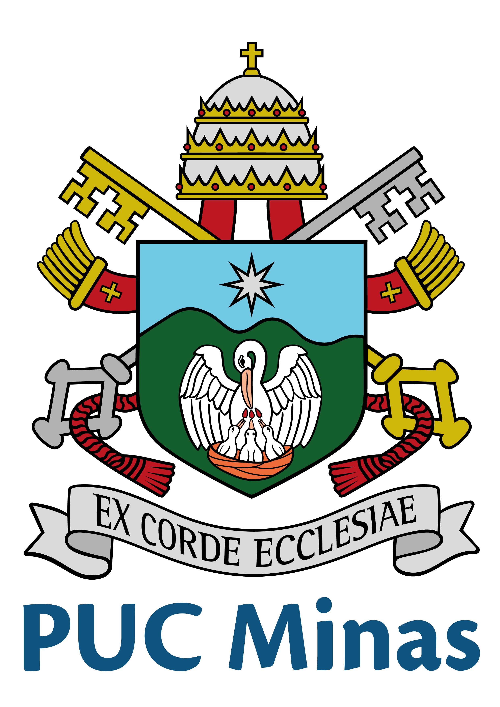
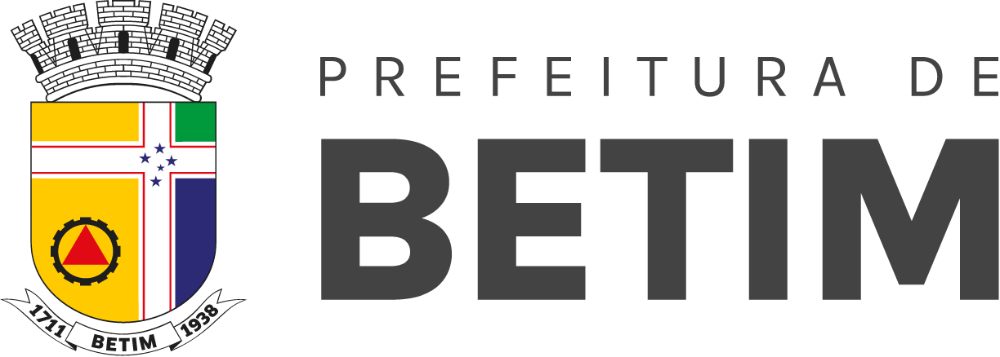

Disque Denúncia Queimadas
Plataforma digital de monitoramento de focos de queimada em Betim — um canal direto entre cidadãos e os órgãos de fiscalização.
O Problema
A cidade de Betim enfrenta um problema crônico e recorrente com queimadas ilegais em lotes vagos, terrenos abandonados e áreas verdes. A maior barreira para a resolução é que muitas dessas ocorrências não são denunciadas de forma oficial ou identificadas a tempo. A ausência de registros rápidos fomenta a impunidade e dificulta a atuação das autoridades competentes.
A Proposta
Um sistema web com foco em sustentabilidade que serve como canal direto, seguro e eficiente entre os cidadãos e os órgãos de fiscalização. Principais funcionalidades:
- Registro de denúncias de forma simples e rápida;
- Ferramenta de geolocalização para informar o local exato da queimada;
- Campos para descrever o ocorrido e fazer upload de imagens como prova;
- Mural e histórico transparente das ocorrências registradas na cidade.
Público-Alvo e Impacto Social
Cidadãos e Moradores
Pessoas que presenciam as queimadas e desejam um meio prático e acessível para agir em prol do meio ambiente e da saúde de suas famílias.
Autoridades e Órgãos Públicos
Corpo de Bombeiros, Prefeitura, Defesa Civil e órgãos ambientais — recebem um banco de dados centralizado e analítico para mapear regiões críticas e planejar ações.
Projeto Acadêmico em Parceria com a Prefeitura de Betim
Trabalho Interdisciplinar Extensionista da PUC Minas Betim, desenvolvido a partir de uma necessidade real da comunidade e com o aval da Prefeitura para a coleta de registros e fotos.
Dashboard de Ocorrências
Relatório detalhado dos focos de queimada registrados na cidade.
Relatório por Bairro
Histórico de Ocorrências
| Bairro / Região | Endereço | Focos | Data / Hora | Foto |
|---|---|---|---|---|
| Carregando... | ||||
📷 Quadro da Vergonha
Fotos dos locais de queimada registradas pelos cidadãos e pela fiscalização.
🛰️ Radar NASA FIRMS
Camada WMS consumindo dados térmicos dos satélites MODIS e VIIRS em tempo real.
✅ Conectado via Chave API.